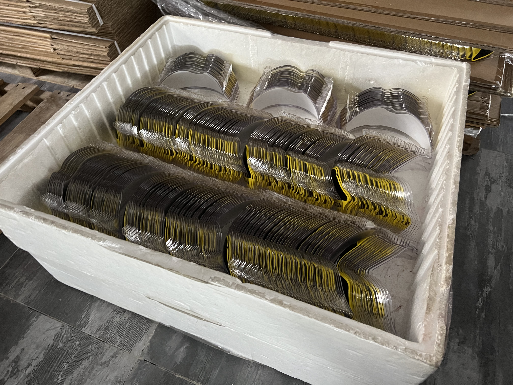

Taotao business-visit photo for packaging context. It is not a compliant marking example or origin determination.
An importer orders China-made replacement components for U.S. distribution. The supplier can pack them individually or in a master carton. The buyer's question is not just which carton is cheapest: will the country-of-origin information still be visible to the right purchaser in the form the product reaches them?
The image shows components and protective packaging seen during a Taotao business visit. It is not a marking example and does not prove the origin or compliance of those parts.
Why this is a pre-packout decision
19 CFR Part 134 sets out U.S. country-of-origin marking rules and exceptions. It defines the ultimate purchaser by the article's path through sale or manufacture, and addresses when a container can carry the marking instead of the article. An outer shipping carton may disappear before a retail customer sees the item. That possibility changes what the buyer needs to check; it does not establish the legal answer for any specific product.
The country-of-origin determination itself also needs care. Assembly or further processing in a second country does not automatically change the origin. Ask a customs professional for a product-specific ruling or advice when materials and processing span countries.
Request a marking pack before the first shipment
| Request | Compare with | Buyer question |
|---|---|---|
| Exact article and component list, manufacturing steps and proposed origin determination | Quote, specifications and supplier records | Which article is being marked, and what supports its stated origin? |
| Final item, retail pack and master-carton artwork | Actual packout sequence and sales channel | Which marking will the ultimate purchaser see? |
| Photos of a representative marked production sample, with location and legibility | Approved artwork and packaging revision | Did the agreed mark reach the physical product? |
| Written exception or container-marking rationale, if claimed | Applicable provision of Part 134 and intended distribution path | Is the proposed exception relevant to this shipment? |
For a door-closer component sold as a standalone replacement part, the buyer's end-user path may differ from a component used only in further manufacturing. The same reasoning applies when sourcing doors and window components. These are decision examples, not conclusions about any specific Taotao item.
Verify the physical path
Trace one unit from factory packout to the U.S. buyer: inner bag, retail box, master carton and any repacking step. Match the part number, purchase order and artwork revision to a dated sample photo. Have the importer or customs broker review the proposed marking method and any claimed exception before release. A shipping photo taken after sealing can confirm packout context, but may not show the item-level mark.
Continue when origin support, the marking method and distribution path have been reviewed for the exact product. Pause if only a master-carton label has been approved and the retail pack will be opened or replaced. Escalate if the origin claim rests on an unexplained change of manufacturing country or a broad exception without product-specific support.
Katherine's corporate-banking experience informs how Taotao compares documents with observable operations. It does not provide access to private bank records or constitute a customs determination.